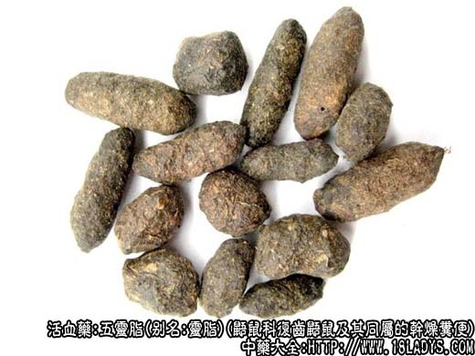

原文连接:https://www.daquan.com/post/2219.html


五灵脂为较常用中药。始载《开宝本草》。商品有灵脂块，灵脂米两种。
别名：溏灵脂、灵脂。
来源：为脊椎动物门、哺乳纲、啮齿目、鼯鼠科、复齿鼯鼠及其同属动物的干燥粪便。鼯鼠野生于松柏林区的石山岩洞或陡壁石缝间。北京郊区有饲养者。
产地：主产于河北、山西、河南、湖北及云南、甘肃、陕西等地。
性状鉴别：灵脂块：系由饴糖样粪便、粪粒及尿液堆集凝结干燥成不规则的块状物。表面灰褐色或棕褐色，显光泽。质坚硬，碎断面不平坦，与表面色泽相同，部分含有黄棕色纤维性粪粒。气腥臭，味苦。
灵脂米：呈长椭圆形颗粒状，两端钝圆，长0.5～1.5厘米，直径3～6毫米。表面褐色，绿褐色或棕褐色，粗糙显麻点。体较轻松，易掰裂，断面灰黄色或黄绿色，纤维性。气微臭，味苦咸。习惯认为灵脂块品质较好，灵脂米较差。灵脂块以块状，黑褐色，饴糖样，有光泽，无杂质者为佳。灵脂米以颗粒完整，表面绿褐色，无杂质者为佳。
主要成分：含维生素A类物质、树脂等。
功效与作用：散瘀止痛。生用活血，炒用止血。临床观察止痛作用较好。
附：体外试验对结核杆菌的生长有较强的抑制作用，且对小白鼠实验性结核病有疗效。对多种皮肤癣菌有不同程度的抑制作用。
炮制：醋炒或生用。
性味：甘、温。
归经：入肝经。
功能：散瘀，行血，止痛。
主治：月经不调，痛经，产后瘀滞腹痛，胃脘痛，肠疝痛等症。
临床应用：主治瘀血所致的痛证，妇科尤为多用。
1、治疗月经困难、经痛而属瘀血所致者，可配延胡索、益母草等，有散瘀通经止痛的作用。
2、用于产后恶露不下，小腹痛，配蒲黄，方如失笑散；或在此基础上再配川芎、当归、延胡索。
3、治疳积：前人认为五灵脂能去疳积痞块，常配胡黄连、干蟾蜍、使君子、砂仁和蔻仁等药，加强驱虫、健胃作用，方如灵脂丸。从现代医学观点看，五灵脂治疳积有效，可能是由于维生素A类物质的营养作用。
使用注意：1、五灵脂易伤胃，胃弱者慎用；2、过去认为五灵脂忌与人参、党参同用，但从临床实践经验看，一般不必禁忌。
用量：6～9g。
处方举例：灵脂丸（《证治准绳》）：五灵脂、白蔻仁、砂仁、麦芽、莪术、青皮、使君子，橘红、干蟾蜍，各6g，研末，米糊丸如麻子大，每服10丸，米汤或开水送下。
注：1、关于五灵脂的来源《开宝本草》列于虫部，寒号虫项下。至《本草纲目》改入禽部，释名：独春、屎名五灵脂，李时珍说：“曷旦乃候时之鸟也，五台诸山甚多，其状如小鸡，四足有肉翅，夏月毛采五色。其屎恒集一处......。”近代日本动物图鉴将寒号虫列为脊椎动物门、哺乳纲、孤蝠科大蝙蝠与苑蝠或其它近缘动物。解放后据河北地区及北京近郊实地调查，证实五灵脂是鼯鼠的粪便。并非虫、鸟及蝙蝠类的粪便。
2、关于灵脂块的形成，过去流传着一种说法，说寒号虫千里觅食，返回巢穴排泄粪便，至冬日毛落不能飞出寻食，自食其粪便越冬，反复食泄多次，逐渐溶解成粘连状物质，即成灵脂块。现已知五灵脂是鼯鼠粪便，饲养鼯鼠的过程中，并未发现有冬日落毛和自食其粪便的情总，饲料多以侧柏叶为主，其粪便呈颗粒状，但较轻泡，无灵脂块的形成。
对灵脂进行水溶分析，录脂米只溶出微量黄色色素，使水染成微黄色，不溶物剥裂后在显微境下观察，呈裂片状纤维，其形状多数如大豆的果荚内皮层；灵脂块则溶出大量橙红或血红样色素，使水染成橙红或棕黄色。不溶物较少呈微细的粉尘状，很少有纤维性物质。根据以上情况，我们认为灵脂块的形成是和鼯鼠所食物有关，在秋季大量的植物果实及种子成熟，此时鼯鼠有食松柏及其它含脂肪较多的种仁，经消化后排出溏样粪便，和尿液混合粘连于一起，干后即为灵脂块。在无种仁可食的春夏季，则采食松柏及其它植物的枝叶，经消化后排出粪便则含大量纤维不能粘连，即灵脂米。是否确切尚待进一步研究。
3、四川、甘肃、青海等省部分地区，习用一种圆球形小粪粒，直径2～5毫米，表面棕褐色或灰褐色，较粗糙，质较轻松，纤维性，俗称草灵脂，又名岩兔粪或岩兔屎。亦收集于山洞中，据知为兔形目鼠兔科鼠兔的干燥屎便。京津地区不用。
4、四川、甘肃等地方另有五灵脂，呈细长椭圆形，两端钝圆或平截，长2～5毫米，直径1～2.5毫米。表面黑灰色或灰色，泥状，有土性气；此外新疆有一种五灵脂，粪粒呈细长椭形，长3～6毫米，直径1～2.5毫米，多粘连凝结成块状。断面浅黄色，纤维性。
以上两种灵脂的来源尚待了解。
5、云南、广西、四川等地有种血灵脂，别名猴结，古名申红。据说是猿猴的经血或分娩时排出的血液遗于地上凝结而成，呈块状。棕色或黑棕色，投入水中有血红样颜色溶出。治经闭有效。其来源待查。
6、据古代本草记载及近代临床实践证明，五灵脂是一种行血，止痛的显效药，但其来源复杂，品质成分不一，其功能差异较大。应进一步探讨，研究其成分，肯定其疗效。